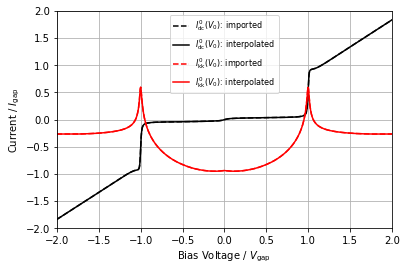
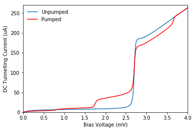
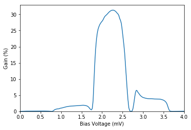

4. Simulating an SIS mixer¶
- This is a multi-tone simultion (i.e., mixing)
- The input consists of 3 signals
- a strong local-osciallator at 230 GHz
- a weak signal at 232 GHz
- the IF signal
- the embedding circuit is included
- the response function is generated from an experimental I-V curve
- The input consists of 3 signals
- This simulation calculates:
- the pumped I-V curve
- the mixer’s gain
In [1]:
import qmix
import numpy as np
import scipy.constants as sc
import matplotlib.pyplot as plt
import qmix.misc.terminal
from qmix.misc.terminal import cprint
from qmix.mathfn.misc import slope
%matplotlib notebook
4.1. Define junction properties¶
In [2]:
vgap = 2.7e-3 # gap voltage in [V]
rn = 13.5 # normal resistance in [ohms]
igap = vgap / rn # gap current in [A]
fgap = sc.e * vgap / sc.h # gap frequency in [Hz]
4.2. Define embedding circuit¶
- Note:
- All of the circuit properties are normalized:
- voltages are normalized to the gap voltage (
vgap), - resistances to the normal resistance (
rn), - currents to the gap current (
igap = vgap / rn), and - frequencies to the gap frequency (
fgap).
- voltages are normalized to the gap voltage (
- This example includes the embedding circuit. Each tone/harmonic
requires:
- the embedding voltage (normalized to
vgap) - the embedding impedance (normalized to
rn) - the frequency of the fundamental (normalized to
fgap)
- the embedding voltage (normalized to
- All of the circuit properties are normalized:
In [3]:
# simulation parameters
num_f = 3 # number of tones
num_p = 1 # number of harmonics
num_b = (10, 5, 10) # Bessel function summations limits
# the LO signal
f_lo = 230e9 / fgap # frequency in [Hz]
alpha_lo = 1.2 # junction drive level (normalized value)
impedance_lo = 0.3 - 0.3*1j # embedding impedance (normalized value)
# the RF signal
f_rf = 232e9 / fgap # frequency in [Hz]
alpha_rf = 0.012 # junction drive level (normalized value)
impedance_rf = 0.3 - 0.3*1j # embedding impedance (normalized value)
# the IF signal
f_if = 2e9 / fgap # frequency in [Hz]
impedance_if = 1. # embedding impedance (normalized value)
# build embedding circuit
cct = qmix.circuit.EmbeddingCircuit(num_f, num_p, fgap=fgap, vgap=vgap, rn=rn, vb_max=1.5)
cct.comment[1][1] = 'LO'
cct.comment[2][1] = 'USB'
cct.comment[3][1] = 'IF'
cct.vph[1] = f_lo
cct.vph[2] = f_rf
cct.vph[3] = f_if
cct.vt[1, 1] = cct.vph[1] * alpha_lo
cct.vt[2, 1] = cct.vph[2] * alpha_rf
cct.vt[3, 1] = 0.
cct.zt[1, 1] = impedance_lo
cct.zt[2, 1] = impedance_rf
cct.zt[3, 1] = impedance_if
cct.print_info()
Embedding circuit (NF:3, NP:1)
f=1, p=1 230.0 GHz x 1 LO
Thev. voltage: 0.4228 * Vgap
1.2000 * Vph
Thev. impedance: 0.30-0.30j * Rn
Avail. power: 4.02E-08 W
-43.956 dBm
f=2, p=1 232.0 GHz x 1 USB
Thev. voltage: 0.0043 * Vgap
0.0120 * Vph
Thev. impedance: 0.30-0.30j * Rn
Avail. power: 4.09E-12 W
-83.881 dBm
f=3, p=1 2.0 GHz x 1 IF
Thev. voltage: 0.0000 * Vgap
0.0000 * Vph
Thev. impedance: 1.00+0.00j * Rn
Avail. power: 0.00E+00 W
-inf dBm
4.3. Generate response function¶
- Here, the response function will be loaded from experimental data
In [4]:
dciv = qmix.exp.RawData0('eg-230-data/dciv.csv')
resp = dciv.resp
resp.show_current();
DC I-V data:
Vgap: 2.72 mV
fgap: 658.44 GHz
Rn: 13.41 ohms
Rsg: 364.09 ohms
Q: 27.15
Jc: 13.53 kA/cm^2
Ileak: 8.74 uA
Offset: 0.10 mV
9.65 uV
Vint: 0.45 mV

4.4. Perform harmonic balance¶
- By using harmonic balance, calculate the voltage drop across the junction for each tone/harmonic/bias voltage
In [5]:
vj = qmix.harmonic_balance.harmonic_balance(cct, resp, num_b)
Running harmonic balance:
- 3 tone(s) and 1 harmonic(s)
- 7 calls to the tunneling current function per iteration
Estimated time:
- time per iteration: 2.56 s / 0.04 min / 0.00 hrs
- max time: 25.64 s / 0.43 min / 0.01 hrs
Error after 0 iteration(s):
f:1.0, p:1, med. r.error: 0.870, max r.error: 1.808, 0.0 % complete
f:2.0, p:1, med. r.error: 0.854, max r.error: 1.656, 0.0 % complete
f:3.0, p:1, med. r.error: 2835610.546, max r.error: 32816455.775, 0.0 % complete
Calculating inverse Jacobian |--------------------| 100.0% Complete
Applying correction
Error after 1 iteration(s):
f:1.0, p:1, med. r.error: 0.014, max r.error: 0.195, 0.0 % complete
f:2.0, p:1, med. r.error: 0.046, max r.error: 0.361, 0.0 % complete
f:3.0, p:1, med. r.error: 0.334, max r.error: 89.682, 0.0 % complete
Calculating inverse Jacobian |--------------------| 100.0% Complete
Applying correction
Error after 2 iteration(s):
f:1.0, p:1, med. r.error: 0.000, max r.error: 0.005, 96.5 % complete
f:2.0, p:1, med. r.error: 0.000, max r.error: 0.017, 87.6 % complete
f:3.0, p:1, med. r.error: 0.001, max r.error: 0.986, 51.2 % complete
Calculating inverse Jacobian |--------------------| 100.0% Complete
Applying correction
Error after 3 iteration(s):
f:1.0, p:1, med. r.error: 0.000, max r.error: 0.000, 100.0 % complete
f:2.0, p:1, med. r.error: 0.000, max r.error: 0.000, 100.0 % complete
f:3.0, p:1, med. r.error: 0.000, max r.error: 0.001, 99.5 % complete
Calculating inverse Jacobian |--------------------| 100.0% Complete
Applying correction
Error after 4 iteration(s):
f:1.0, p:1, med. r.error: 0.000, max r.error: 0.000, 100.0 % complete
f:2.0, p:1, med. r.error: 0.000, max r.error: 0.000, 100.0 % complete
f:3.0, p:1, med. r.error: 0.000, max r.error: 0.000, 100.0 % complete
Done: Minimum error target was achieved.
- time: 9.87 s / 0.16 min.
- 4 iterations required
- 2.47 s / iteration
- 0.04 min / iteration
4.5. Calculate desired tunnelling currents¶
In [6]:
idc, ilo, iif = qmix.qtcurrent.qtcurrent_std(vj, cct, resp, num_b=num_b)
4.6. Plot the pumped I-V curve¶
In [7]:
vmv = vgap / sc.milli
ima = igap / sc.milli
iua = igap / sc.micro
iua = igap / sc.micro
In [8]:
fig, ax1 = plt.subplots()
ax1.plot(resp.voltage*vmv, resp.current*iua, label='Unpumped')
ax1.plot(cct.vb*vmv, idc*iua, 'r', label='Pumped')
ax1.set(xlabel='Bias Voltage (mV)', xlim=(0,4))
ax1.set(ylabel='DC Tunnelling Current (uA)', ylim=(0,270))
ax1.legend();

4.6.1. Plot gain¶
In [9]:
pusb = cct.available_power(2)
rload = cct.zt[3,1].real*rn
pload = 0.5 * np.abs(iif*igap) ** 2 * rload
gain = pload / pusb
In [10]:
fig, ax2 = plt.subplots()
ax2.plot(cct.vb*vmv, gain*100)
ax2.set(xlabel='Bias Voltage (mV)', xlim=(0,4))
ax2.set(ylabel=r'Gain (%)')
ax2.set_ylim(bottom=0);
